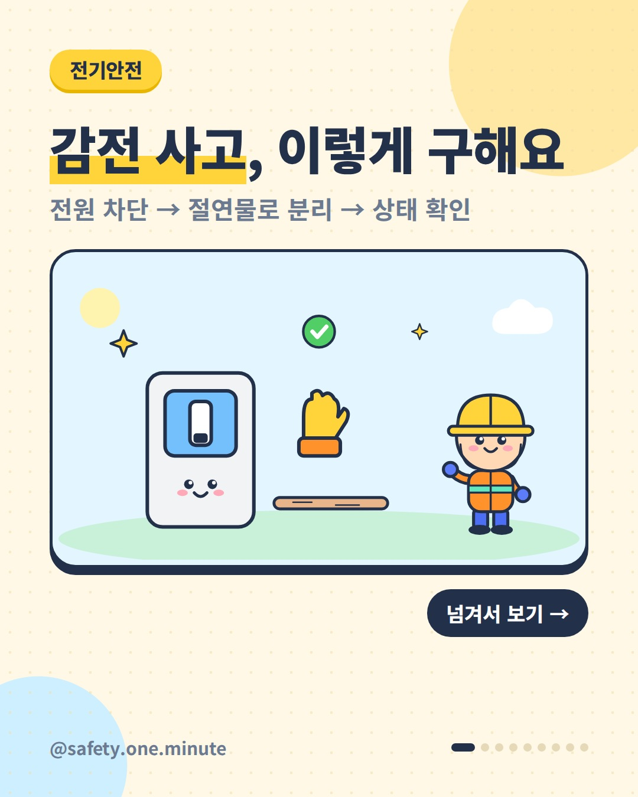
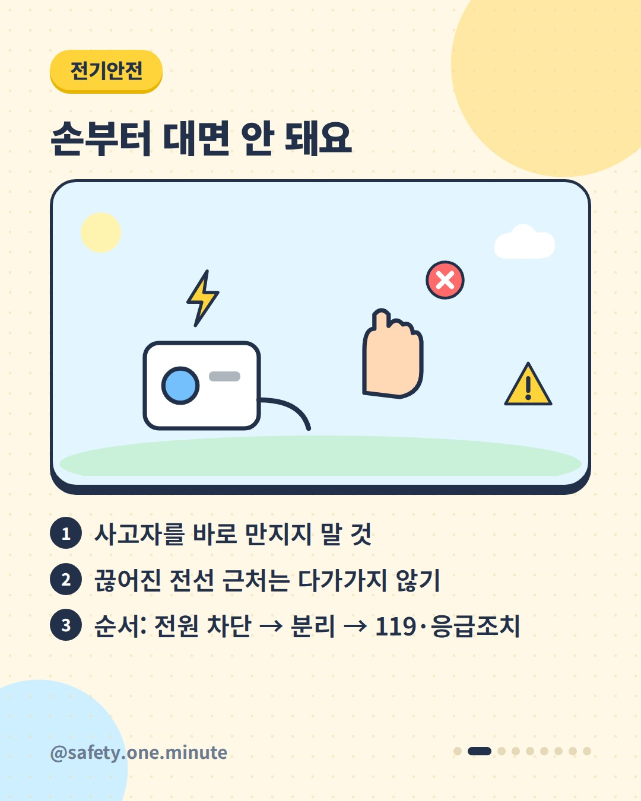
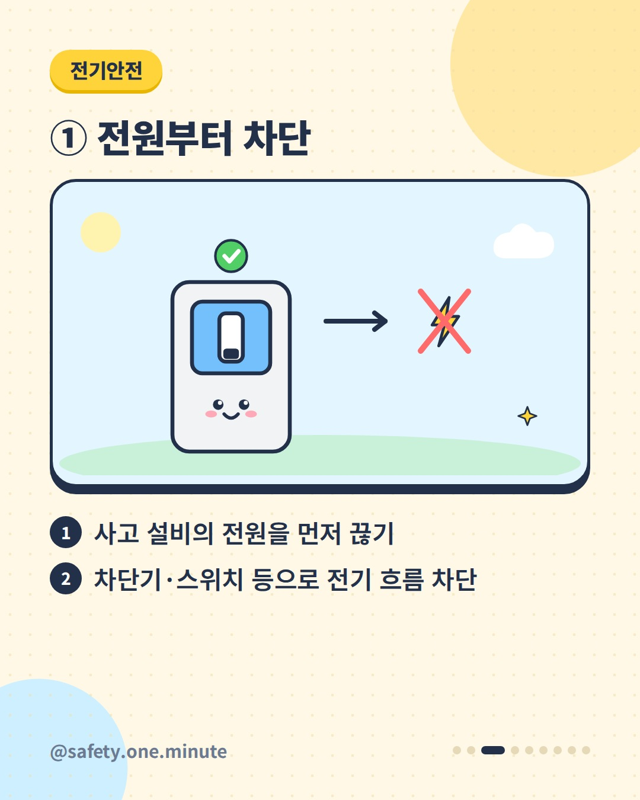
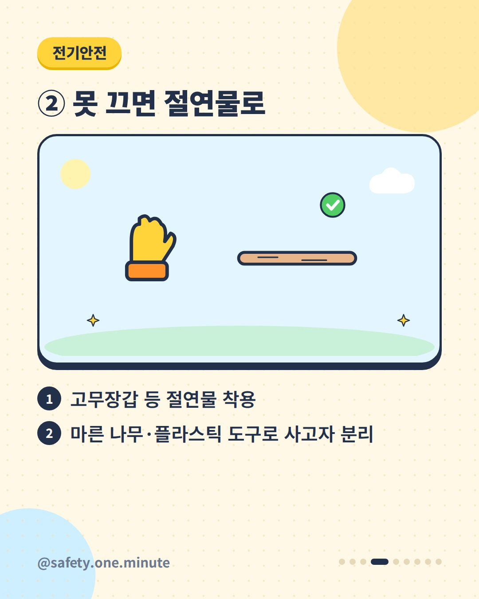
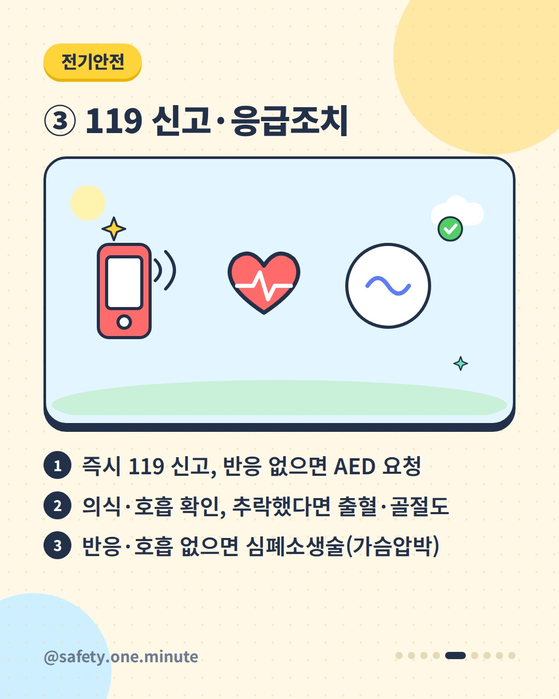
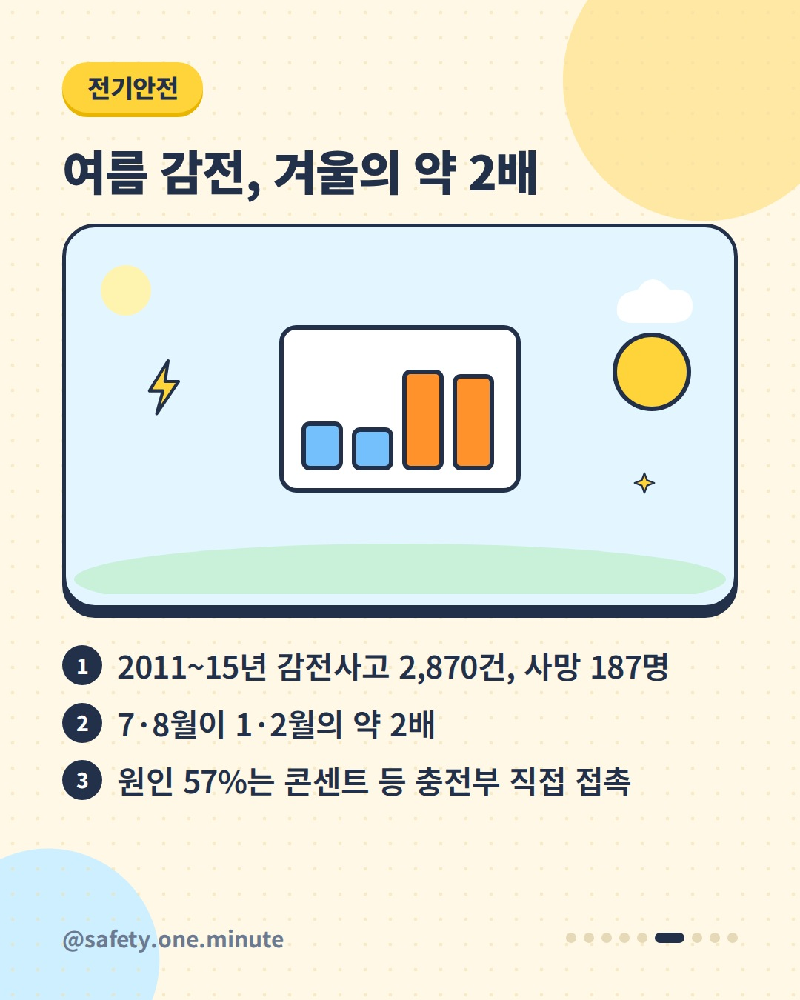
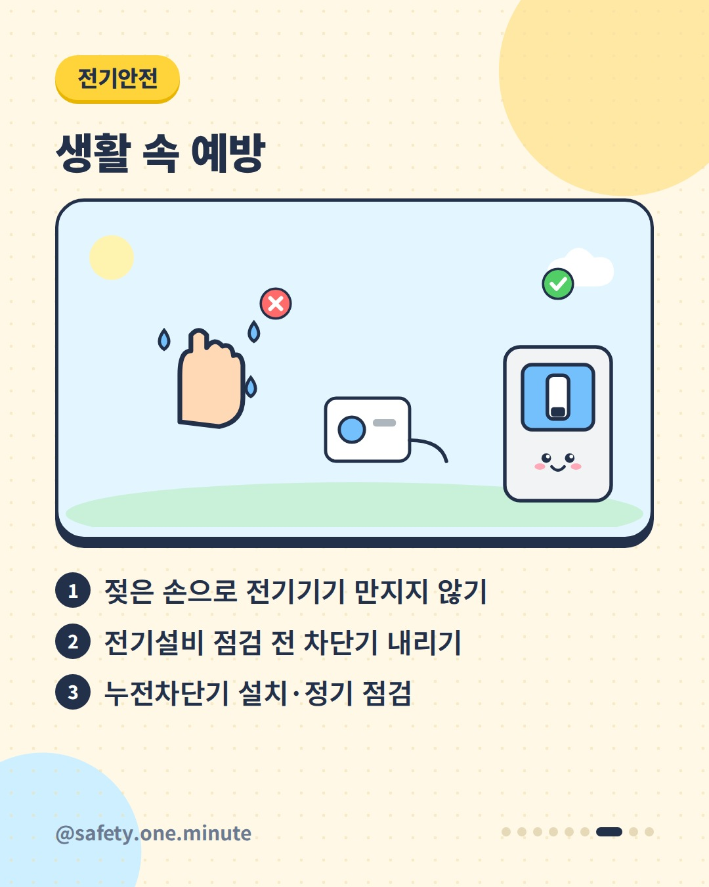
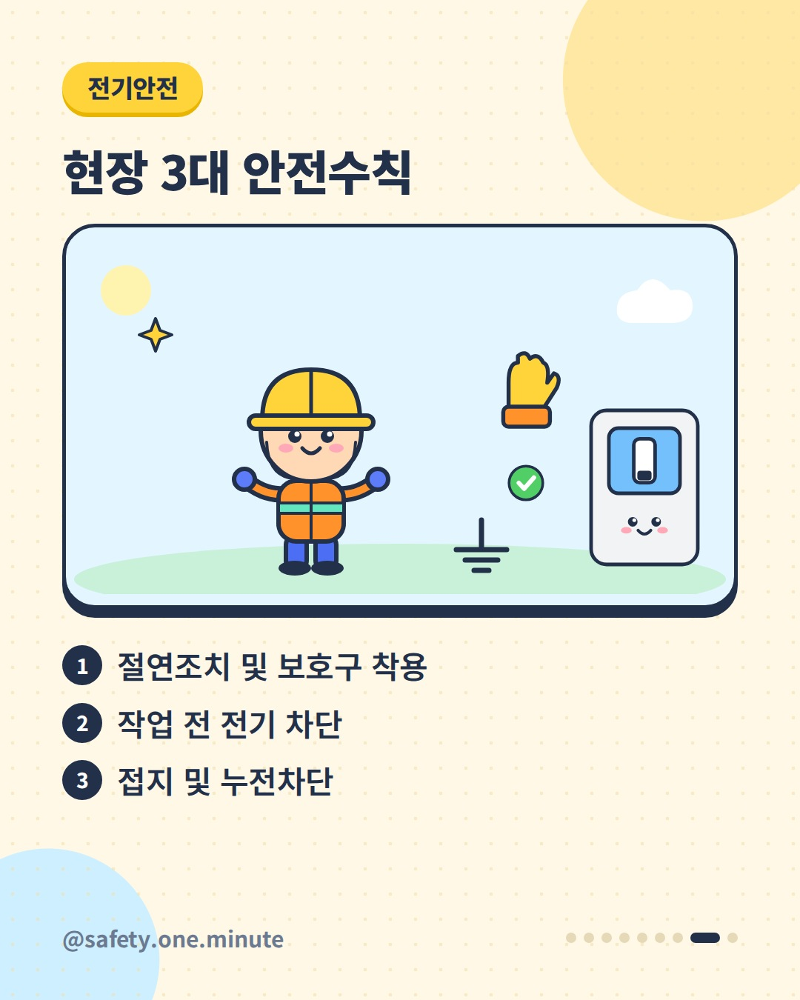
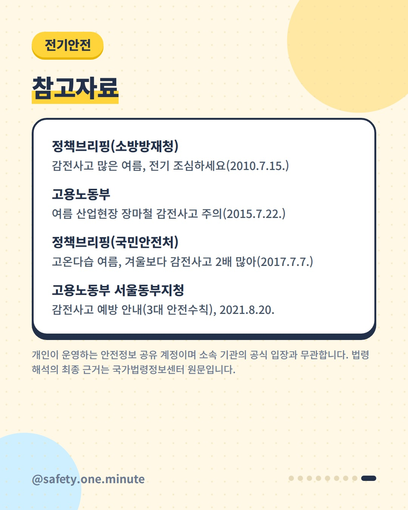

감전 사고, 이렇게 구해요 — 9장 (4:5)









캡션
눈앞에서 누군가 감전됐다면, 먼저 손을 뻗지 마세요. 정부가 안내해 온 감전사고 대처 순서입니다. ① 먼저 사고 설비의 전원을 차단합니다. ② 전원을 끌 수 없다면 고무장갑 등 절연물을 착용하고, 마른 나무나 플라스틱 도구로 사고자를 떼어냅니다. ③ 지체 없이 119에 신고하고, 반응이 없으면 자동심장충격기(AED)도 요청합니다. 의식·호흡(높은 곳에서 떨어졌다면 출혈·골절도)을 확인하고, 반응이 없으면 심폐소생술(가슴압박)을 합니다. 끊어진 전선 근처에는 다가가지 마세요(소방청). 국민안전처 자료(2017)에 따르면 2011~2015년 감전사고는 2,870건, 사망은 187명이었고, 7·8월 사고가 1·2월의 약 2배였습니다. 원인의 57%는 콘센트 등 충전부를 직접 만진 경우였습니다. 예방 수칙 ✔ 젖은 손으로 전기기기 만지지 않기 ✔ 전기설비 점검 전 차단기 내리기 ✔ 누전차단기 설치와 정기 점검 ✔ 작업현장 3대 수칙: 절연조치·보호구 착용, 작업 전 전기 차단, 접지·누전차단 ※ 통계와 대처 요령 일부는 2010~2017년 자료입니다. 출처: - 소방방재청(정책브리핑) – 감전사고 많은 여름, 전기 조심하세요(2010) - 고용노동부 – 여름 산업현장 장마철 감전사고 주의(2015) - 국민안전처(정책브리핑) – 고온다습 여름, 겨울보다 감전사고 2배 많아(2017) - 고용노동부 서울동부지청 – 감전사고 예방 안내(2021) - 소방청(정책브리핑) – 집중호우 안전수칙(2026) - 행정안전부(정책브리핑) – 성인 심폐소생술(2025) 개인이 운영하는 안전정보 공유 계정이며 소속 기관의 공식 입장과 무관합니다. 법령 해석의 최종 근거는 국가법령정보센터 원문입니다. #감전 #감전사고 #응급조치 #전기안전 #누전차단기 #생활안전